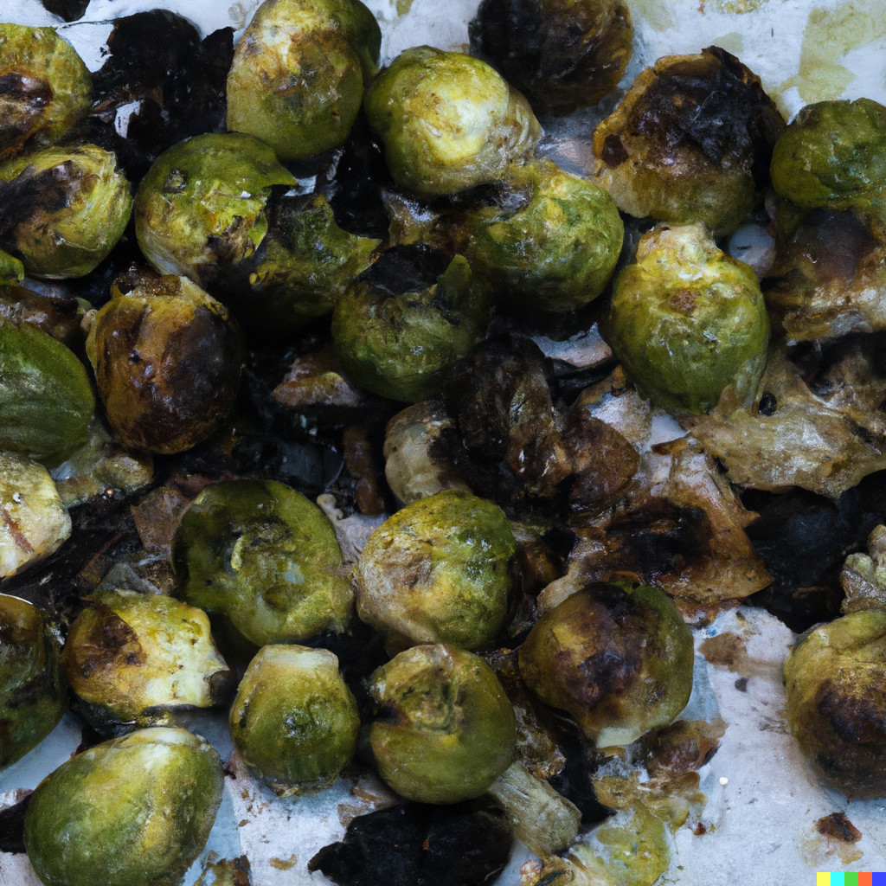

Burnt Brussel Surprise
I really like surprises!

This dish features Brussels sprouts that have been carefully overcooked and charred to a crisp. They are smothered in a mixture of burnt breadcrumbs, melted butter, sour cream, lemon juice, garlic powder, salt, and pepper, which contributes to its appearance and flavor.
Ingredients:
- 1 pound Brussels sprouts
- 1 cup burnt breadcrumbs
- 1/2 cup melted butter
- 1/4 cup sour cream
- 1 tablespoon lemon juice
- 1 teaspoon garlic powder
- 1 teaspoon hot sauce
- Salt and pepper to taste
Instructions:
- Preheat the oven to 425°F (220°C).
- Trim the ends of the Brussels sprouts and cut them in half. Place them in a baking dish.
- In a separate bowl, combine the burnt breadcrumbs, melted butter, sour cream, lemon juice, garlic powder, salt, and pepper. Mix well to form a clumpy mixture.
- Pour the breadcrumb mixture over the Brussels sprouts, ensuring they are evenly coated.
- Place the baking dish in the preheated oven and bake for 25-30 minutes or until the Brussels sprouts are overcooked and charred, resulting in a burnt and appetizing appearance.
- Once cooked, remove from the oven and let it cool slightly.
- Serve the Burnt Brussel Surprise on a plate, garnishing it with a sprinkle of extra burnt breadcrumbs.
Serving Suggestion:
Serve this as a side dish, accompanied by a glass of warm tap water to complete the dining experience.
This recipe is purely fictional and is not intended for actual consumption.